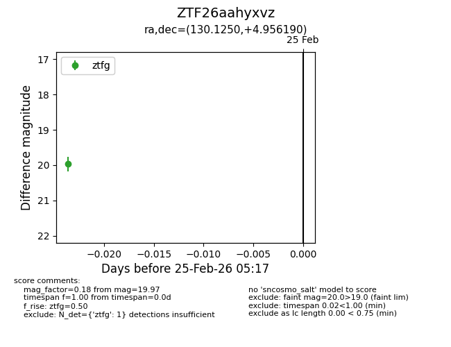
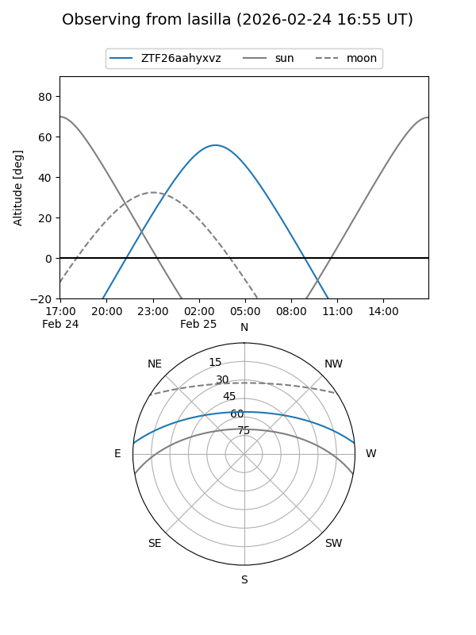
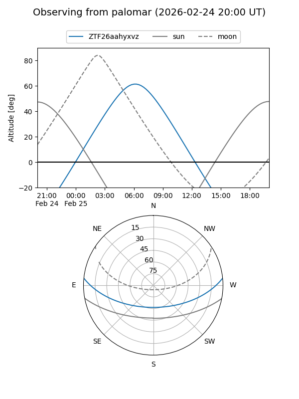

ZTF26aahyxvz
Target ZTF26aahyxvz at 2026-02-25 05:19
Aliases and brokers:
FINK: link
Lasair: link
ALeRCE: link
alt names
ZTF26aahyxvz (ztf,fink_ztf)
Coordinates:
equatorial (ra, dec) = 130.1250,+4.95619
equatorial (HMS+DMS) = 08:40:30.01,+04:57:22.28
galactic (l, b) = (221.3606,+26.46091)
Flags:
Photometry:
last ztfg=19.97
1 ztfg detections
Lightcurve

Visibility


Additional plots